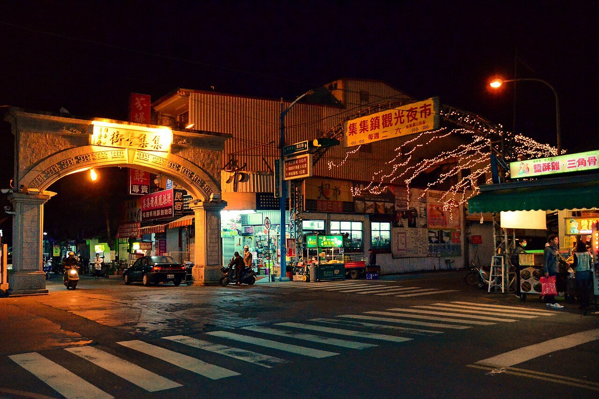
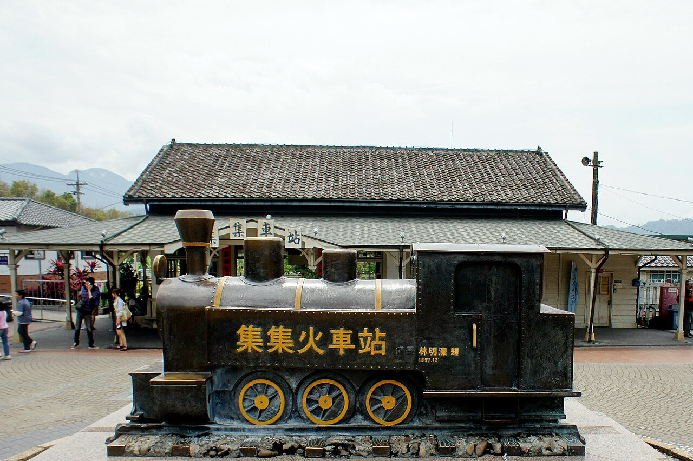

ZONE 02 老街
攝影：Mk2010／CC BY 4.0
站前老街與山蕉
香蕉王國的記憶，留在老街的一支香蕉冰、一包香蕉蛋捲裡。
出站右轉，就是老街
五百公尺，逛完一座小鎮的日常
車站前的民生路一帶與周邊的舊街區，常被旅人稱為「集集老街」。這裡保留不少經營多年的老店，賣懷舊零食、香蕉製品與在地小吃，從車站步行約五、六百公尺，就能逛完主要街區。
老街不大，適合慢慢走。買一支香蕉冰，邊吃邊走到下一個展區，正好。

山蕉小學堂
同樣是香蕉，為什麼集集的叫「山蕉」？
250 公尺台灣最主要的香蕉品種「北蕉」，種在海拔 250 公尺以上的，就叫做山蕉。
溫差大集集地勢較高、日夜溫差大、土壤排水良好，種出的山蕉口感軟Q。
香蕉王國台灣香蕉曾大量外銷日本，集集山蕉也在那段黃金歲月中聞名。
今天老街上的香蕉冰淇淋、香蕉蛋捲與山蕉脆片，延續著這段產業記憶。
互動｜車站周邊散步地圖
一條環狀路線，串起四個地方
點地圖上的點或右側清單，看介紹與距離。虛線是建議的散步順序：車站 → 武昌宮 → 明新書院 → 回車站，直線距離合計約 3.3 公里。
示意圖依各地點經緯度等比例繪製，街道未畫出；實際步行請以導航為準。